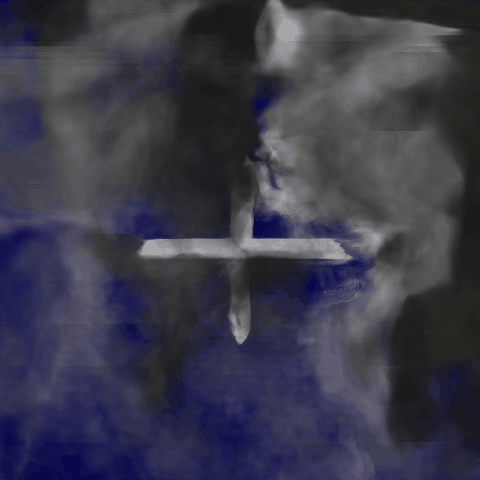
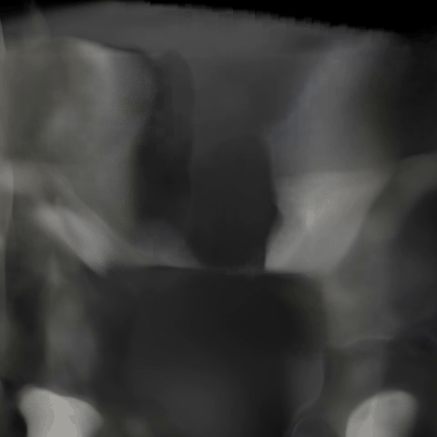
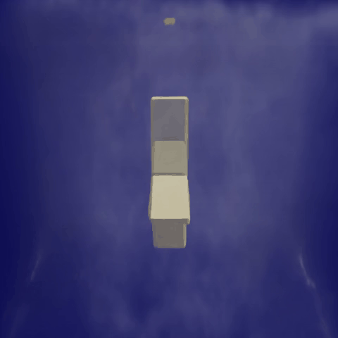

Experimental Visualization
Comparisons between our method and mainstream dynamic reconstruction algorithms
(a) GroundTruth

(b) PINF

(c) PICT

(d) Ours
Figure 1: Sand‑impact‑rigid‑body experiment

(a) GroundTruth

(b) PINF

(c) PICT

(d) Ours
Figure 2: Water‑impact‑water‑wheel experiment
(a) Ground truth of granular‑flow scene
(b) Rigid‑only reconstruction
(c) Fluid‑only reconstruction
(d) Our decoupled rigid‑fluid joint reconstruction
Figure 3: Dynamic visualization of decoupled rigid and fluid components